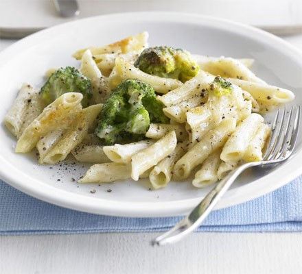

Cheesy Brocoli Pasta

Description:
This is one of my best emergency quick dinner ideas and 2-in-1 veg plus carb side dish. Broccoli, pasta and not much else, it’s a little bit lemony, a little bit cheesy and a whole lot of yum.
The broccoli is cooked with the pasta then stirred vigorously with sauce to make it juicy and saucy
Ingredients:
- 280g penne
- 280g broccoli, cut into florets
- 25g butter
- 25g plain flour
- 300ml milk
- 1 tbsp wholegrain mustard
- 140g mature cheddar, grated
Steps:
- Cook the pasta, adding the broccoli for the final 4-5 mins and cooking until tender. Drain well, then heat the grill.
- Heat the butter in a saucepan and stir in the flour. Cook for 1 min, then gradually add the milk, stirring well between each addition.
Bring to the boil, stirring, then simmer for 2 mins, before stirring in the mustard, half the cheese and seasoning.
- Mix the pasta and broccoli into the sauce and spoon into an ovenproof dish. Scatter over the remaining cheese and place under a hot grill for 3-4 mins until golden and bubbling.